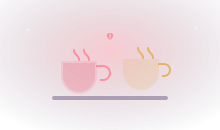

60 idées de rendez-vous en couple pour toutes les envies

Il arrive à tous les couples de tourner en rond. On se retrouve un vendredi soir, fatigués, et la seule idée qui vient c'est un film sur le canapé pour la troisième fois de la semaine. Rien de grave, mais à la longue, la routine s'installe et la complicité s'endort un peu.
Un rendez-vous à deux, ce n'est pas forcément un grand restaurant ou une soirée qui coûte cher. C'est surtout un moment où vous décidez de vous consacrer l'un à l'autre, sans écran, sans liste de courses dans la tête. Voici soixante idées classées par envie et par budget, pour que vous trouviez toujours quoi faire, quel que soit le moment.
Des rendez-vous à la maison
On sous-estime souvent ce qu'on peut vivre chez soi. Pas besoin de sortir pour créer une vraie parenthèse à deux : il suffit de changer un peu le décor et de couper les distractions.
- Cuisinez un plat que vous n'avez jamais tenté, chacun aux commandes d'une étape.
- Organisez une dégustation à l'aveugle : chocolats, fromages, thés ou petits vins.
- Ressortez vos vieilles photos et racontez-vous les souvenirs qui vont avec.
- Installez un pique-nique par terre, dans le salon, bougies comprises.
- Lancez une soirée jeux à deux, avec un vrai enjeu pour pimenter la partie.
- Écrivez-vous une lettre, chacun de votre côté, à lire à voix haute ensuite.
Pour une soirée maison réussie
Osmooz Red
Le jeu de cartes qui transforme une soirée canapé en vrai moment à deux : des questions et des défis pour se reconnecter, sans écran.
Lien partenaire : vous soutenez le site sans payer plus cher.
Des idées gratuites ou presque
Un beau rendez-vous ne dépend pas de votre budget. Ces idées ne coûtent rien ou presque, et laissent souvent de meilleurs souvenirs qu'une addition salée.
- Partez marcher au lever ou au coucher du soleil, sans destination précise.
- Préparez un thermos et allez observer les étoiles loin des lumières de la ville.
- Visitez un musée gratuit ou une expo en accès libre près de chez vous.
- Refaites votre tout premier rendez-vous, au même endroit si c'est possible.
- Cherchez un point de vue en hauteur et emportez de quoi grignoter.
- Passez une après-midi à la bibliothèque à vous choisir des lectures l'un pour l'autre.
Sortir et bouger à deux
Faire une activité ensemble, surtout une qui sort de vos habitudes, crée une complicité particulière. On rit de ses maladresses, on s'encourage, on repart avec une histoire à raconter.
- Réservez un cours à deux : poterie, danse, cuisine ou escalade.
- Louez des vélos et tracez un itinéraire au hasard pour la journée.
- Tentez une salle d'escape game, l'occasion de voir comment vous coopérez.
- Explorez un quartier de votre ville que vous ne connaissez pas.
- Allez cueillir des fruits de saison dans une ferme qui ouvre au public.
- Prenez un billet de train pas cher et partez découvrir une ville voisine sur la journée.
Nos coffrets à offrir (ou à s'offrir)
Wonderbox — Moments en Duo
Un large choix d'activités à vivre à deux : bien-être, gastronomie, aventure. La bonne excuse pour bloquer un vrai rendez-vous.
Wonderbox — Week-End en Amoureux
Une nuit à deux pour casser la routine, sans passer des heures à chercher où aller. Idéal pour un anniversaire de couple.
Wonderbox — Nuit Insolite en Duo
Cabane, bulle sous les étoiles, lieu atypique : une nuit hors du commun pour un souvenir qui sort vraiment de l'ordinaire.
Liens partenaires : en passant par ces liens, vous soutenez le site sans payer plus cher.
Des rendez-vous romantiques
Parfois, on a juste envie de se retrouver dans une ambiance douce, rien que tous les deux. Voici de quoi soigner ces moments-là.
- Dressez une table soignée pour un dîner à la maison, comme au restaurant.
- Réservez une nuit ailleurs, même à quelques kilomètres, pour casser la routine.
- Créez une playlist de vos chansons et dansez dans le salon.
- Offrez-vous un massage à deux, avec une huile et une lumière tamisée.
- Regardez le film de votre premier rendez-vous, ou celui qui vous a marqués.
- Écrivez chacun trois choses que vous admirez chez l'autre, et échangez-les.
Un souvenir à garder pour toujours
Kit de moulage main couple personnalisé
Immortalisez vos deux mains enlacées dans une sculpture à faire ensemble. Une activité tendre et un souvenir qui reste, parfait comme cadeau d'anniversaire de couple.
Lien partenaire : vous soutenez le site sans payer plus cher.
Instaurer un rendez-vous régulier
La meilleure idée de toutes, c'est peut-être de ne pas attendre l'inspiration. Les couples qui gardent leur complicité intacte sont souvent ceux qui se réservent un rendez-vous récurrent, une fois par semaine ou une fois par mois, quoi qu'il arrive.
Ce rendez-vous devient un repère. On sait qu'on a ce moment devant soi, on l'attend, on le prépare. Peu importe ce que vous y faites : l'important, c'est la régularité et l'intention. C'est exactement l'idée derrière nos carnets guidés, pensés pour vous donner un cap et des questions à explorer à chaque rendez-vous.
Le quiz Cupidon
Quel type de couple êtes-vous ?
Découvrez votre profil en deux minutes et recevez des idées de rendez-vous choisies pour vous deux, directement par e-mail.
Faire le quiz
La lettre de Cupidon
Une idée pour votre couple, chaque semaine
Recevez une nouvelle idée de rendez-vous, un jeu ou un défi à tester à deux, directement dans votre boîte mail. Gratuit, et sans blabla.
Une idée par semaine. Désinscription en un clic.
Comment choisir la bonne idée, ce soir
Ne cherchez pas la sortie parfaite. Demandez-vous simplement de quoi vous avez besoin en ce moment, tous les deux : rire, vous poser, vous redécouvrir, ou juste souffler. Partez de cette envie, piochez une idée dans la liste, et lancez-vous. Le reste vient tout seul.
Gardez cette page dans vos favoris : à chaque fois que la routine pointe le bout de son nez, vous saurez où trouver de l'inspiration.